創業1966年。極厚鋼板のガス切断加工と、自社ブランドMAJINの開発製造を、東京都江戸川区で続けてまいりました。
短納期・特殊形状・OEM・少ロット──ご相談内容に応じて、最短でお応えいたします。
厚板加工のご依頼から、自社ブランドMAJINに関するお問い合わせ、会社情報まで。
該当する項目を選択いただくと、最適なページへ直接ご案内します。
B2Bの厚板ガス切断加工で培った技術を、自社ブランド「MAJIN」の開発に応用しています。
切断技術と素材選定の知見が、両事業を支えています。
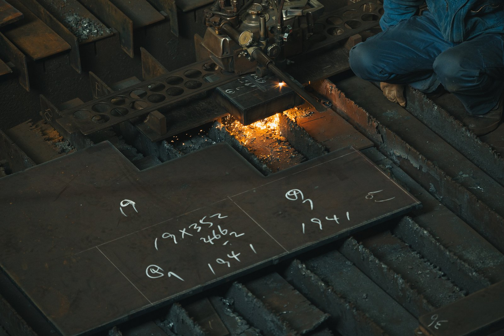
6mm〜150mmの極厚鋼板を、寸法切り・型切り・特殊形状で対応。創業以来磨き続けてきた本業です。
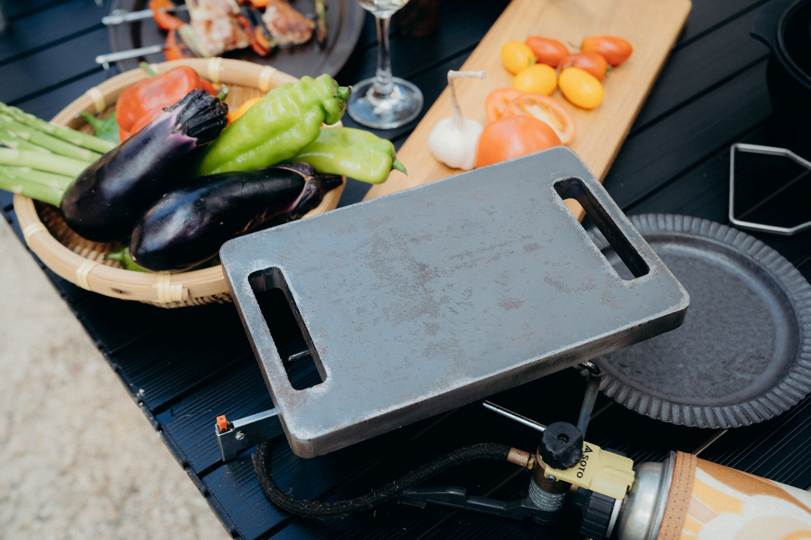
厚板の蓄熱性能を活かした、肉のための鉄板。OEMでの製造もお受けしております。
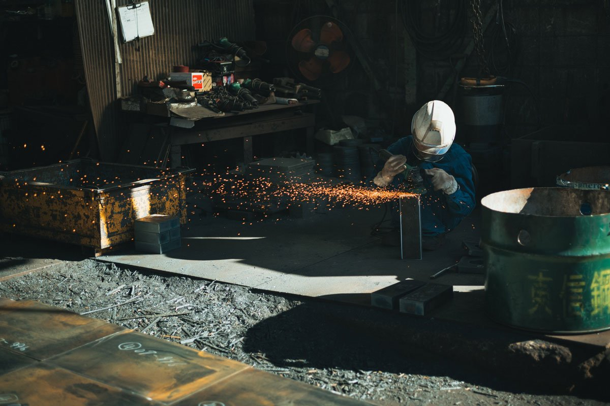
国内・海外の厚板を常時在庫。極厚板の寸法切り・型切りに加え、お客様のご要望に応じた特殊形状の加工も承ります。 少ロット・短納期のご相談にも、長年の経験でお応えしてまいります。
長年のガス溶断技術を活かした、極厚の鉄板です。一度温まれば冷めにくく、肉の旨みを閉じ込めて焼き上げます。
キャンプ・焚き火・自宅のコンロまで、シーンを問わず使える設計です。OEMでの製造についても、お気軽にご相談ください。
MAJIN詳細・購入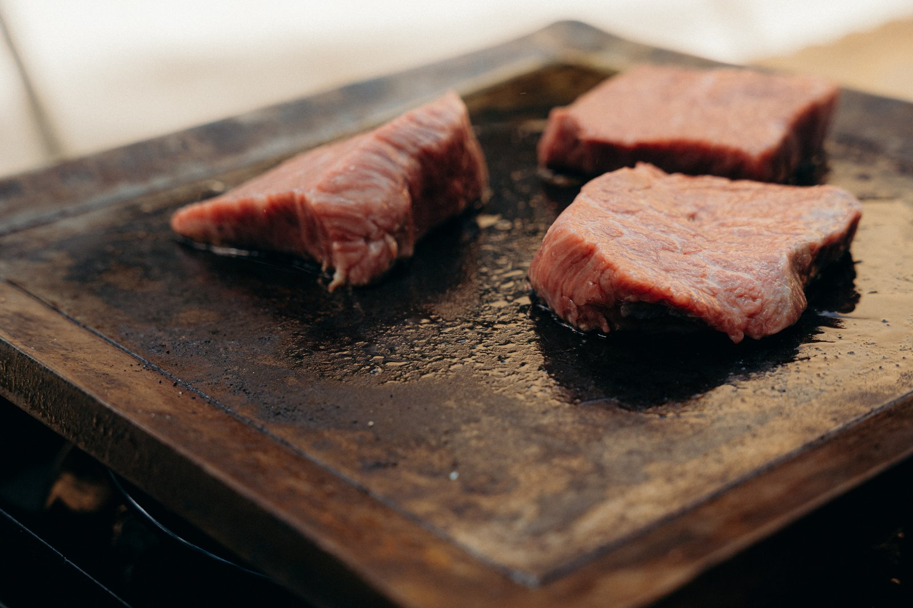
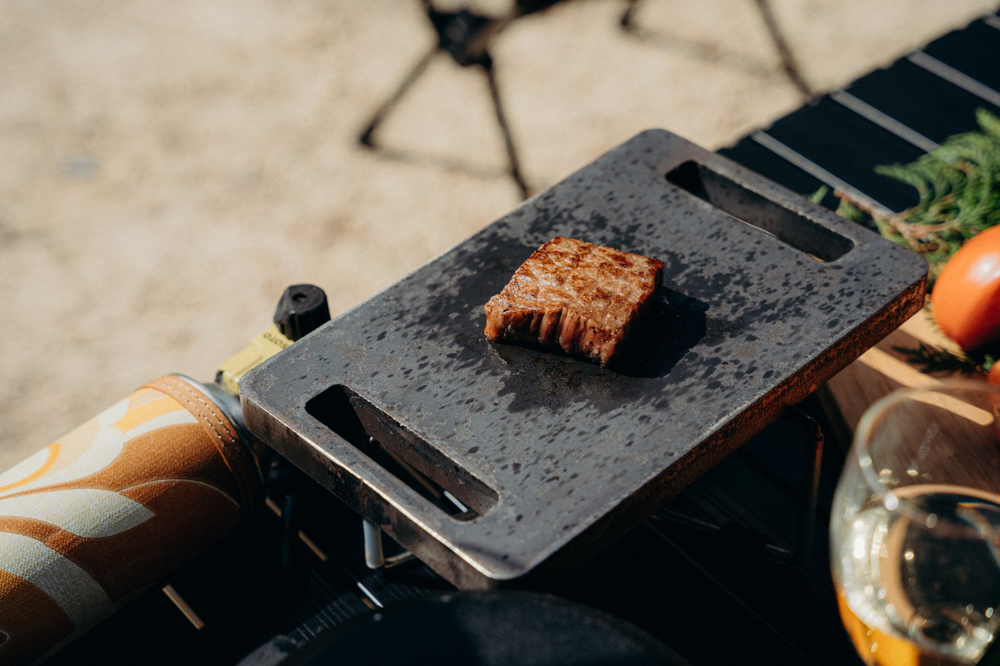
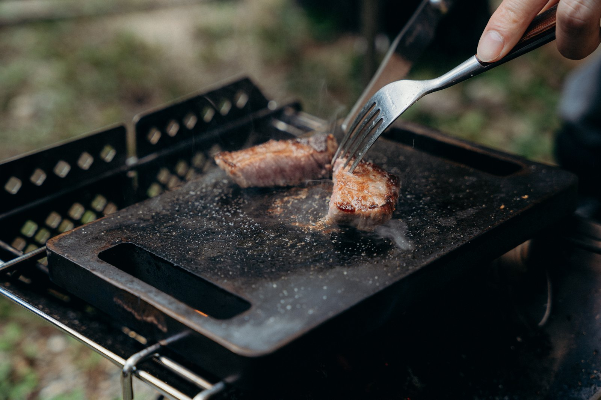
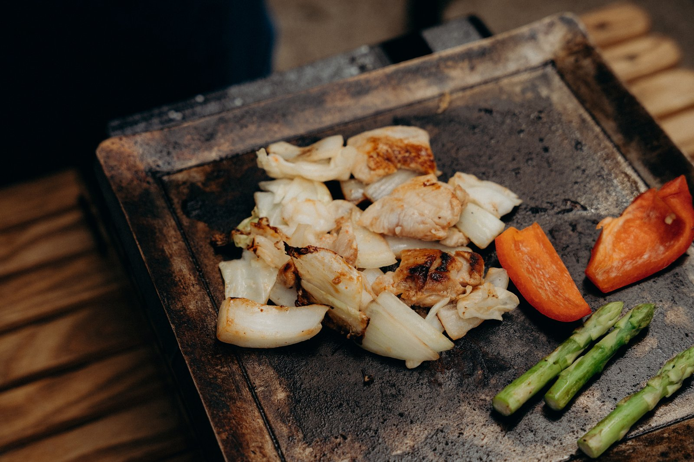
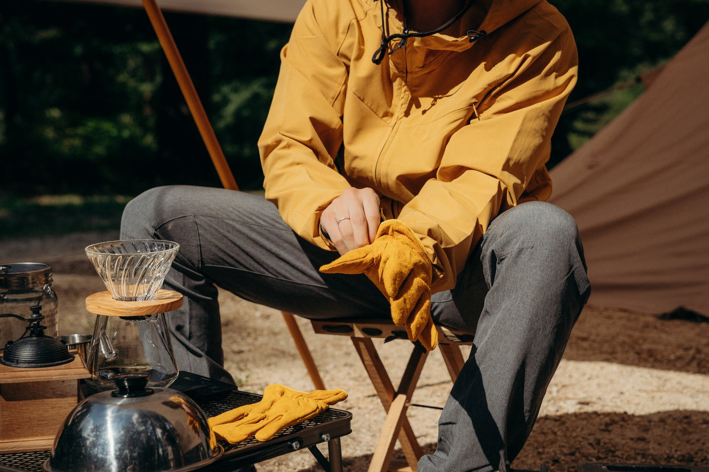
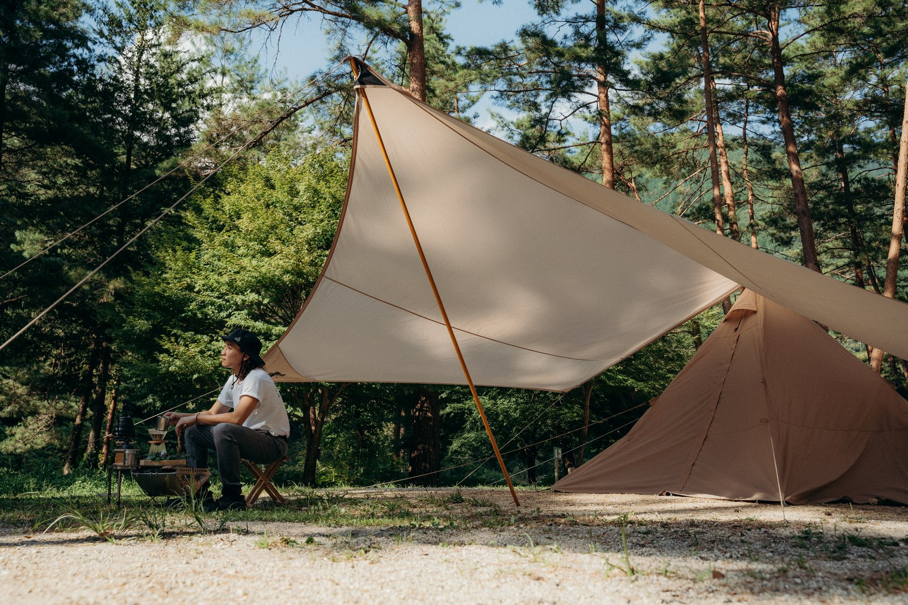
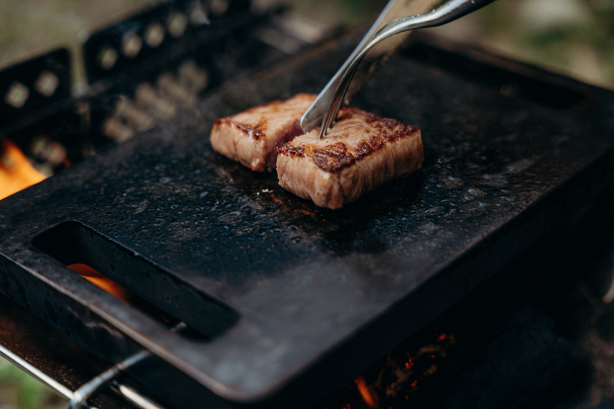
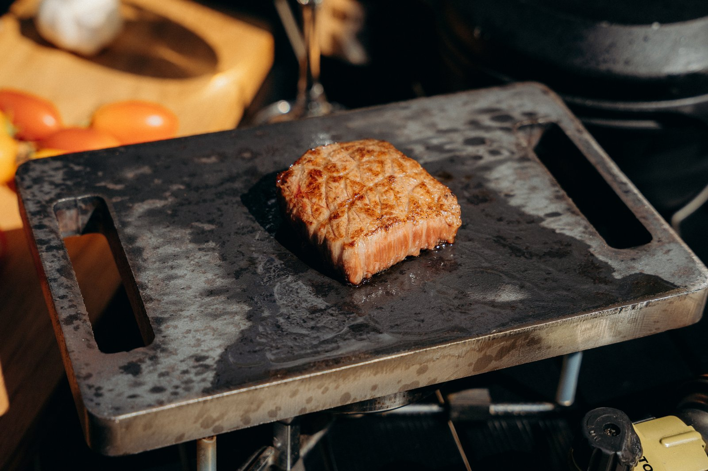
お見積り・サンプル・OEMのご相談など、お気軽にお問い合わせください。
担当者より速やかにご連絡いたします。